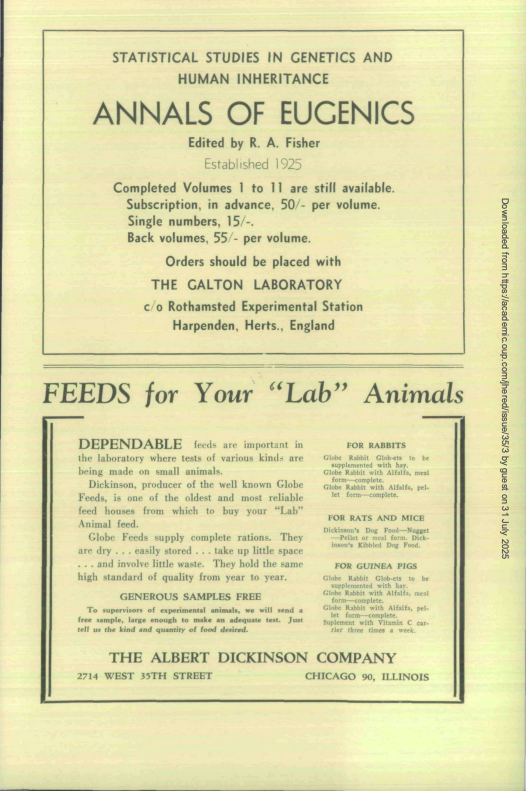
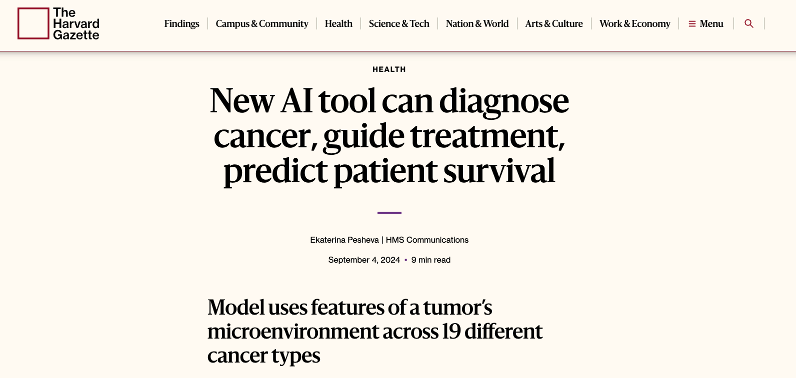

PSTAT 100: Lecture 22
Data Science Ethics
Department of Statistics and Applied Probability; UCSB
Summer Session A, 2025
\[ \newcommand\R{\mathbb{R}} \newcommand{\N}{\mathbb{N}} \newcommand{\E}{\mathbb{E}} \newcommand{\Prob}{\mathbb{P}} \newcommand{\F}{\mathcal{F}} \newcommand{\1}{1\!\!1} \newcommand{\comp}[1]{#1^{\complement}} \newcommand{\Var}{\mathrm{Var}} \newcommand{\SD}{\mathrm{SD}} \newcommand{\vect}[1]{\vec{\boldsymbol{#1}}} \newcommand{\tvect}[1]{\vec{\boldsymbol{#1}}^{\mathsf{T}}} \newcommand{\hvect}[1]{\widehat{\boldsymbol{#1}}} \newcommand{\mat}[1]{\mathbf{#1}} \newcommand{\tmat}[1]{\mathbf{#1}^{\mathsf{T}}} \newcommand{\Cov}{\mathrm{Cov}} \DeclareMathOperator*{\argmin}{\mathrm{arg} \ \min} \newcommand{\iid}{\stackrel{\mathrm{i.i.d.}}{\sim}} \]
Ethics
- According to Merriam Webster, ethics is defined as:
“a set of moral principles : a theory or system of moral values” (source)
- Ethics and ethical guidelines arise in a wide array of disciplines
- For example, the Hippocratic Oath is a code of conduct physicians and doctors swear to act by when practicing medicine
- The American Bar Association (in charge of certifying practicing lawyers) establishes a code of conduct all certified lawyers are expected to act in accordance with
Ethics
Data Science
- Why should we, as Data Scientists, be concerned with Ethics?
- Not a rhetorical question - let’s discuss!
The Dark Secret of Statistics
One of the foremost statisticians of the 1900s was Ronald Aylmer Fisher.
- His contributions to statistics are undeniable.
There is some debate surrounding the term “eugenics,” especially in light of it’s usage within the Nazi party.
Regardless, it was a purportedly “scientific” field that ultimately lead to the subjugation of many groups.

Ethics
Data Science
- In today’s lecture, I’d like to set out to do two things:
- Make you aware of “bad” statistical practices that are still being carried out
- Make you aware of the far-reaching consequences these bad practices have for the world as a whole
Misleading Statistics
First Example: p - Hacking

This illustrates a variant of something known as p-hacking
As we’ve seen, a p value is essentially a measure of evidence against a null and in favor of an alternative.
We’ve also seen that they are not immune to the effects of randomness
- That is, as we saw with multiple testing, the probability of falsely rejecting a null increases with the number of tests we run.
Misleading Statistics
First Example: p - Hacking
- Loosely speaking, p-hacking refers to the practice of repeatedly running tests until a significant result is obtained.
Misleading Statistics
First Example: p - Hacking
Let’s Discuss!
What are some potential ramifications of p-hacking? Why might we consider p-hacking “unethical”?
Misleading Statistics
Second Example: F-Screening
As another example of bad (or, at least, needs-improvement) statistical practice, let’s consider a pretty recent set of considerations due to Drs. Olivia McGough, Daniela Witten and Daniel Kessler
- Dr. Witten actually gave last year’s Sobel Lecture on this topic; you can read the associated paper (published in 2025!) here.
Essentially, it is somewhat common statistical practice to only report “interesting” (i.e. significant) results, and to simply not report results that are not significant.
In the context of regression (specifically, determining which covariates in an MLR model are statistically significant), the authors call this practice F-Screening.
Misleading Statistics
Second Example: F-Screening
The authors point out that F-screening can actually cause us to lose standard theoretical guarantees
- For example, we lose Type I error control and coverage interpretations of confidence intervals
They propose modified versions of standard statistical tests and practices to mitigate against these negative effects.
The paper itself is quite well-written, and I encourage you to read through it (provided you have some 120B and 126 knowledge).
- I mainly include it as an example here to illustrate that even now research is still being done into questionable statistical practices!
Misleading Statistics
Third Example: Missing Confounders
- As a third example, I refer us back to yesterday’s lecture: failing to account for confounders.
- In the UC Berkeley Admissions case study, we saw that failing to account for
difficult of majoractually created apparent biases that didn’t actually exist - In the NSW case study, we saw that failing to account for various demographic confounders created the illusion that the training was detrimental when it was, in fact, beneficial
- In the UC Berkeley Admissions case study, we saw that failing to account for
Data Science Ethics
Multiple Attempts
Hopefully these two examples (plus the examples outlined in the assigned reading for today’s lecture) demonstrate the need for a unified set of principles of data science ethics
Indeed, there have been several attempts at producing such a set of principles.
Two particularly famous ones (that we will discuss today):
- The Data Values and Principles Manifesto, by DataPractices.org
- The Ethical Guidelines for Statistical Practices, developed by the American Statistical Association
Data Science Ethics
Data Values and Principles Manifesto
Use data to improve life for our users, customers, organizations, and communities
Create reproducible and extensible work
Build teams with diverse ideas, backgrouns, and strengths
Prioritize the continuous collection and availability of discussions and metadata
Clearly identify the questions and objectives that drive each project and use to guide both planning and refinement.
Be open to changing our methods and conclusions in response to new knowledge.
Data Science Ethics
Data Values and Principles Manifesto
Recognize and mitigate bias in ourselves and in the data we use.
Present our work in ways that empower others to make better-informed decisions.
Consider carefully the ethical implications of choices we make when using data, and the impacts of our work on individuals and society.
Respect and invite fair criticism while promoting the identification and open discussion of errors, risks, and unintended consequences of our work.
Protect the privacy and security of individuals represented in our data.
Help others to understand the most useful and appropriate applications of data to solve real-world problems.
Your Turn!
Your Turn! (Exercise 1 from Chapter 8 of our Textbook)
A researcher is interested in the relationship of weather to sentiment (positivity or negativity of posts) on Twitter. They want to scrape data from https://www.wunderground.com and join that to Tweets in that geographic area at a particular time. One complication is that Weather Underground limits the number of data points that can be downloaded for free using their API (application program interface). The researcher sets up six free accounts to allow them to collect the data they want in a shorter time-frame. What ethical guidelines are violated by this approach to data scraping?
04:00
Reproducibility
A term you will hear a lot throughout statistics and datascience is reproducibility
Essentially, reproducibile results are those that can be replicated (i.e. found again) given the same tools used to initially create them.
- For example, the results of a clinical trial would be reproducible if a third-party could gain access to the same data and arrive at the same results and conclusions.
Part of ensuring your research is reproducible is documentation.
- Make sure to keep a record of things like: where you originally found a particular dataset, which packages you used (and possibly even which versions of these packages you used), which functions you used, etc.
Reproducibility
Programming Languages
On a related note, as the authors of our textbook point out, “Data science professionals have an ethical obligation to use tools that are reliable, verifiable, and conducive to reproducible data analysis.”
As a somewhat extreme example, consider the programming language SAS: pharmaceutical researchers almost exclusively program in SAS. Why?
- Well, it turns out that SAS is very tightly regulated in terms of what updates can be made, what sorts of new functions can be added, etc.
- Indeed, it’s sometimes (colloquially) stated that SAS is “FDA-approved”
Reproducibility
Programming Languages
On the flipside,
Ris touted (and often celebrated) as being very open source.This has the distinct advantage of making
Rcutting-edge, but has been the source of some criticism against the programming language itself.For those unaware, the Comprehensive
RArchive Network (CRAN) is the widely-accepted sole database of “approved”Rpackages- The process of geting an
Rpackage uploaded to CRAN is very extensive, involving lots of checks, meaning that packages uploaded to CRAN are often very reliable. (CRAN Repository Policy) - Be wary of packages not hosted on CRAN (e.g. solely on GitHub)
- The process of geting an
Data Privacy
Another key concept in the realm of data science ethics is that of privacy.
In certain cases, the observational units (remember these?) of a particular dataset may not want to be uniquely revealed.
As such, you will often encounter data that has been privatized in some way (e.g. data that has been stripped of all potentially identifying information like name, gender, address, etc.)
Sometimes data is aggregated for privacy purposes.
- For example, instead of recording whether specific people contracted a particular disease, the dataset may only record the proportion of infected people across different geographic regions (counties, states, etc.)
Data Privacy
- Data Aggregation often affects the statistical methods you use to analyze the data.
- This is another reason it is so important to understand how our data was collected and reported before beginning our analyses!
- As a very approachable example of how aggregated data can be used in a real-world setting, I encourage you to check out this article by Dr. Kathryn Grace (who will be joining our department this coming academic year!)
Case Study: COMPAS
To close out, I’d like to take a few minutes to explore a fairly famous (infamous?) case study.
In recent years, we have observed an increase in the use of machine learning algorithms to aid decisions about individuals in the justice system.
A major element of this is modeling recidivism rates
- From Merriam Webster: recivisim = “a tendency to relapse into a previous condition or mode of behavior”
One algorithm/software used in this context is the Correctional Offender Management Profiling for Alternative Sanctions (COMPAS) system.
- A lengthy practitioners report, published by the creators of the COMPAS algorithm can be found here
Case Study: COMPAS
In 2016, ProPublica published a groundbreaking article highlighting several ways in which the COMPAS algorithm exhibited concerning signs of racial bias.
You can read the article here, and a more detailed breakdown of the authors’ analyses here.
With our PSTAT 100 knowledge, we actually have the tools to explore and replicate some of the authors’ findings; an endeavor we’ll start today in lecture, and you’ll finish on the Bonus Lab (should you choose to complete it).
Case Study: COMPAS
The Algorithm
First, let’s understand what the COMPAS system does.
Subjects are administered a 137-question questionnaire; the algorithm then takes their answers an returns a score of 1 - 10, indicating how likely (1 being the most unlikely, 10 being the most likely) to recidivate.
- Scores of 1-4 are labelled as “Low”; scores of 5-7 are labelled as “Medium”; scores of 8-10 are labelled as “High”
One of the things that ProPublica did was examine the COMPAS ratings of over 10,000 criminals in Broward County (located in Florida), and track how many of them actually recidivated or not.
Given that the COMPAS algorithm is essentially a classification model, this leads us naturally into considering our classification error rates
Case Study: COMPAS
Understanding Rates
Check Your Understanding
- In this context, what is the definition of a False Positive Rate (FPR)?
- In this context, what is the definition of a False Negative Rate (FPR)?
- What ProPublica found is that “[…] black defendants who did not recidivate over a two-year period were nearly twice as likely to be misclassified as higher risk compared to their white counterparts (45 percent vs. 23 percent).” (ProPublica, 2016)
- They also “[…] found that white defendants who re-offended within the next two years were mistakenly labeled low risk almost twice as often as black re-offenders (48 percent vs. 28 percent).” (ProPublica, 2016)
Case Study: COMPAS
Race
- It is important to note that race is not one of the questions asked of subjects.
- So, how could the algorithm then determine the race of individuals?
- The answer lies in what are sometimes known as proxy variables.
- Loosely speaking, proxy variables are those that can be used to reconstruct a hidden or missing variable.
- For example, three questions the COMPAS survey does ask are: “Was one of your parents ever sent to jail or prison?”, “How many of your friends/acquaintances are taking drugs illegally?”, “How often did you get in fights while at school?”
- The answers to these questions are highly correlated with race.
Case Study: COMPAS
Race
In today’s Lab (the Bonus Lab), I ask you to delve a little deeper into ProPublica’s analysis.
- Even if you are not planning on submitting the lab, I highly recommend you take a look through it for your own sakes!
One thing to note is that the COMPAS algorithm is considered proprietary and therefore is not released to the public.
- Nevertheless, one can (and, indeed, the ProPublica authors did!) reconstruct a proxy to the algorithm using logistic regression.
“Black-box” algorithms like this are very prevalent in our modern-day society.
Dr. Cathy O’Neill has coined the term “Weapon of Math Destruction” (WMD) to refer to some of these types of algorithms.
Weapons of Math Destruction
In her book titled Weapons of Math Destruction: How Big Data Increases Inequality and Threatens Democracy, Dr. O’Neill proposes three metrics by which an algorithm can be classified as a WMD: Opacity (Are details available upon request?), Scale (Is the algorithm being used in broad and far-reaching situations?), and Damage (Who is hurt by this algorithm, and how?).
Let’s see how the COMPAS algorithm fares on this metric:
- Opacity: as mentioned above, the algorithm is closed-source and not available to the public.
- Scale: the algorithm is being used in a wide variety of states, and are sometimes even used by Judges to inform sentencing
- Damage: those incorrectly assigned high recidivism scores are often sentenced harsher, or even just viewed in a more negative light than those who do not.
Hence, the COMPAS algorithm would likely count as a WMD.
ChatGPT
Finally, I would be remiss to not at least mention ChatGPT
At its core, ChatGPT utilizes a model (algorithm).
- This algorithm (like most algorithms) must be trained on data.
- That is, data is needed to find optimal parameter estimates.
OpenAI (the parent company of ChatGPT) provides information on how the model is trained.
- They say: “OpenAI’s foundation models, including the models that power ChatGPT, are developed using three primary sources of information: (1) information that is publicly available on the internet, (2) information that we partner with third parties to access, and (3) information that our users, human trainers, and researchers provide or generate.” (OpenAi)
ChatGPT
- Recently, some people have brought up the fact that not everyone consented to have their data included in the training of the model.
- This is an especially heated discussion in the Arts, in the context of AI Art
- Some early versions of chatbots were also producing racist and derogatory statements.
Food For Thought
Is ChatGPT a Weapon of Math Destruction?
Some Takeaways
As data scientists, it can be easy for us to mentally remove ourselves from the context in which our research will be applied.
I encourage you to combat this - always try and make sure to have a sense on how your research may impact others.
A quote from the ProPublica article, from one of COMPAS’ original creators, Tim Brennan:
“I wanted to stay away from the courts,” Brennan said, explaining that his focus was on reducing crime rather than punishment. “But as time went on I started realizing that so many decisions are made,you know, in the courts. So I gradually softened on whether this could be used in the courts or not.” (ProPublica, 2016)
Some Takeaways
Tip
Awareness can go a long way.
- Nobody is asking you to guess every possible way your work might be used!
- Rather, just be aware of the potential implications of your work.
- Also, keep in mind - we exist within the confines of a system. You have collaborators and supervisors you can use as soundboards for ideas and conversations like this!
It’s Not All Bad
Next Time
Next Time
So… where do we go from here?
Well, as I’ve said a few times, my hope was to structure PSTAT 100 like a “table of contents” of Data Science - giving you a brief introduction to a variety of topics.
The good news is that there is a lot more to learn about these topics!
Indeed, there exist several classes in our own department that you can look into taking if you’re interested to learn more.
Next Time
Regression / Modeling
- Regression is by far one of the most applicable topics in statistics - it is also one of the deepest!
- In PSTAT 126/127, you’ll explore the theory behind linear models in greater depth (What does homoskedasticity really mean? What do we do if our response is integer-valued?)
- Statistical learning is an equally deep field; classes like PSTAT 131/231 fill in some gaps we left this quarter and introduces you to some more techniques!
- For example, there are non-regression classifiers (Discriminant Analysis is a popular one)
Next Time
Sampling / Study Design
- Sampling and study design are another set of very rich subject!
- PSTAT 120B gives you some more background on estimation and sampling distributions; PSTAT 120C continues with some more advanced hypothesis testing (did you know you can statistically test whether you believe two variables to be independent or not?)
- PSTAT 123 gives you a much deeper look into the mechanisms behind sampling, and the analysis of data obtained through non-SRSes (e.g. stratified samples)
- PSTAT 122 walks you through ANOVA in greater details, and how to actually design experiments
Next Time
Time Series
- Time Series models are another very applicable set of models.
- Loosely speaking, we can think of time series analysis as the analysis of data that is serially correlated (longitudinal data, anyone?)
- PSTAT 174/274 walks you through the basics of this style of analysis.
- I highly recommend everyone to take this course, since, as you can likely imagine, most real-world data is correlated!
Next Time
Special Topics
- PSTAT 105 provides a greater look into nonparametric analysis
- E.g. KDE; series estimation;
- Again, I’m a bit biased - my own research falls into the realm of nonparametric statistics!
- PSTAT 115 provides an introduction into a completely different way of thinking about statistics, called the Bayesian framework
- You’ll talk more about Monte Carlo methods here!
Next Time
- I leave you with a (pretty famous) quote from the statistican John Tukey:
The best thing about being a statistician is that you get to play in everyone’s backyard.
- I couldn’t agree more!
- So now that you have the basics down… it’s time to go play!
Thank You For a Great Quarter!
Please don’t forget to take a Hex Sticker!

PSTAT 100 - Data Science: Concepts and Analysis, Summer 2025 with Ethan P. Marzban